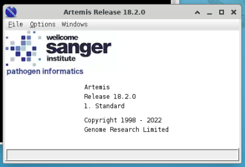
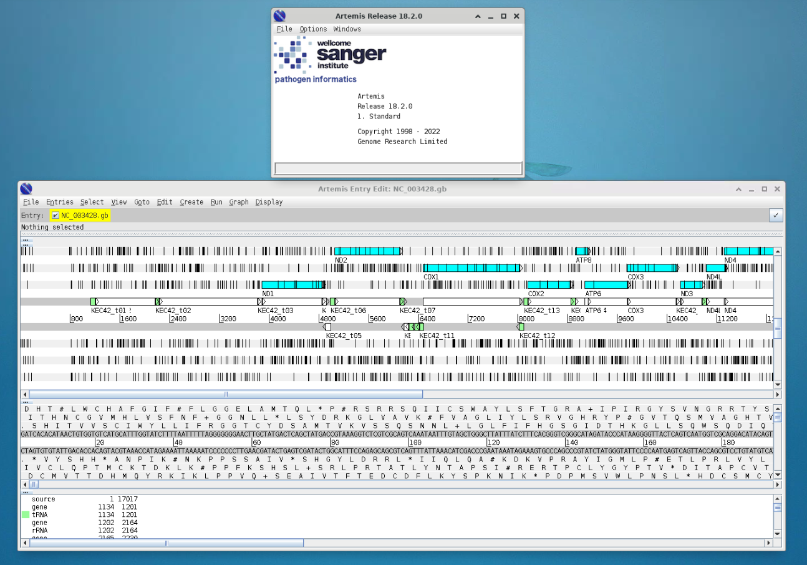
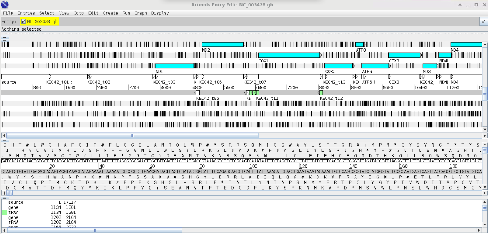

java -version
If you’re feeling confident
As you go through each step of the annotation process, use loops to apply it to all the prokaryote genomes you’ve assembled.
If you’re not feeling confident
Pick one prokaryote genome and work through annotating it. Use the time later in the extension session to use loops to apply the process to all the prokaryote genomes.
Visualising genomes using Artemis
Artemis is a rather old but very elegant genome visualisation tool. To get you used to using it, we will try it out using an example genome that’s already been annotated.
Artemis can be installed locally local install instructions. Warning: this can take time, so please do not do it during teaching session.
Artemis Mac Install
Additional Sanger Centre training material can be downloaded using the following link - Sanger center training
download latest version of Artemis from https://github.com/sanger-pathogens/Artemis/releases/download/v18.2.0/artemis-macosx-release-18.2.0.dmg.gz
download java from Latest Releases - must be jdk v11 or above, from TechSpot or Adoptium
unpack Artemis - and move the files to a folder somewhere … i.e to an Artemis directory you’ve made somewhere.
find out what version of java is currently on your system
or you can see the java versions you have available using
/usr/libexec/java_home -V- then depending on your shell - edit the relevant rc file
nano ~/.zshrcand add a line …. change the -v1.8 to -vXX depending on the version of java you have as default.
export JAVA_HOME=$(/usr/libexec/java_home - v1.8)- now install the version of java you have just downloaded - this will install and make the default java change to this version. You should also see a new line appear when you run this command.
/usr/libexec/java_home -V- now run Artemis - use terminal to change to the directory you put the apps in in step 3
cd ~/Artemis/
Artemis.app/Contents/artwill run Artemis - or alternatively you should be able to click on the icons in finder to run.
If there is a security issue - go … File – System Settings – Privacy & Security .. and then look for a statement that says “Artemis” was blocked from use because it is not from an identified developer …. and click Open Anyway - you need to have admin/sudo privileges to do this.
Artemis should run
- the next time you log into your mac - the default java will be the default one and not the one required to use Artemis … so to the terminal and type (change -v flag depending on jvm version)
export JAVA_HOME=$(/usr/libexec/java_home -v16)and now you should be able to run Artemis again
if you want to keep use this java as default - edit your .zshrc file
if you don’t want to type in that command all the time, add this to your .zshrc file
alias javaart='export JAVA_HOME=$(/usr/libexec/java_home -v16)'and then type
javaartinto a terminal to change to the version of java required for Artemisalternatively you should be able to edit the
Artemis.app/Contents/art
#script and add
export JAVA_HOME=$(/usr/libexec/java_home - v16)- at the top somewhere - haven’t tested this to force the right version of java to be used.
To use Artemis via your Linux desktop on the server, you need to enable it to use a visual interface. Open a new tab in MobaXterm and log in using the slightly modified command:
#For masters' students
ssh [your username]@sponsa.bios.cf.ac.uk -X -p [your port number]
#For Y3 students
ssh [your username]@hawker.bios.cf.ac.uk -X -p [your port number]Use the three-word passphrase you were assigned.
The -X enables the graphical interface.
Exercise: Loading a Genome into Artemis
Load the Artemis module and initiate Artemis with command art
module load artemis/18.2.0
artArtemis Opening Screen

Open Genbank File
>File >OpenNavigate to your Session3 folder and select the genbank file (NC_003428.gb).

Cancel any warnings you should see the following window;

The blue highlighted area should highlight open reading frames (ORFs) and the vertical lines stop codons - notice that there are vertical line in the middle of ORFs this indicates that we are using the wrong codon table. Arrange your graphics windows so you can see the Opening window which will be hidden behind the gene display window - you should see something like this.

Now change the codon table by selecting
> Options > Genetic Code Tables
selecet
Vertebrate MitochondrialYour gene visualisation should now look like this

As we create our annotations, you will be able to visualise the various outputs using Artemis.
Extension Work
I have included a range of extension exercises / guides generated by the Sanger Centre (the people who wrote Artemis) these are included in your Session3 folder under Artemis_Sanger_Center
Prokka - bacterial genome annotation
Prokka is a piece of software that is designed to identify genes from sequence data. It works best on prokaryotes. Once it identifies genes, it creates a file including the sequence for the sample, along with a set of annotations to that sequence, which identify the locations of genes. The annotation is written to a GFF3 file: a GFF file is a type of specialised table that lists the ‘features’ (genes, rRNAs, tRNAs etc.) in an assembly and where to find them.
module load prokka_mambaforge/1.14.6Check which version you have installed with module avail
Basic commands / usage: To run prokka on an assembly (with an example filename of ‘contigs.fa’ use the command:
module load prokka_mambaforge/1.14.6
prokka contigs.faIf you want to view the names of output files, you need to provide a name for the files and a directory where they should be saved:
Choose the names of the output files with --outdir and --prefix
module load prokka_mambaforge/1.14.6
prokka --outdir mydir --prefix mygenome contigs.faNOTE: Prokka defaults to analyzing Bacteria. Think about what your sample is and what codon table you should use (This is also important for Artemis)!
Prokka for mitochondrial annotation (Not recommended! See next workshop for how to annotate mitochondria)
If you’re working on mitochondria include --kingdom mito and the relevant --gcode. Some examples:
1. The Standard Code
2. The Vertebrate Mitochondrial Code
3. The Yeast Mitochondrial Code
4. The Invertebrate Mitochondrial Code
5. The Echinoderm and Flatworm Mitochondrial CodeA full command for mitochondrial annotation would look like this:
module load prokka_mambaforge/1.14.6
prokka --outdir prokka --kingdom Mitochondria --gcode 2 assembly/contigs.fasta
Exercise: Running PROKKA and checking annotations
Take your assembled genome(s) and run Prokka to annotate the genome. Open this in Artemis.
What do you see as you move along the genome? Are there regions where genes should be that Prokka has not annotated? How would you work out if a gene should be there?
Worked Example - Prokka Loop
Extension: BARRNAP - BASIC RAPID RIBOSOMAL RNA PREDICTOR
Barrnap predicts the location of ribosomal RNA genes in genomes. It supports bacteria (5S,23S,16S), archaea (5S,5.8S,23S,16S), metazoan mitochondria (12S,16S) and eukaryotes (5S,5.8S,28S,18S). Prokka will run Barrnap as part of its workflow, but if you fancy you can try running it as a standalone application, too.
Barrnap takes FASTA file of assembled DNA sequences as input, and writes a GFF3 as output. Barrnap uses the new NHMMER tool that comes with HMMER 3.1 for HMM searching in RNA:DNA style. NHMMER binaries for 64-bit Linux and Mac OS X are included and will be auto-detected. Multithreading is supported and one can expect roughly linear speed-ups with more CPUs.
Basic command usage:
module load barrnap/0.9
barrnap [options] Your_contigs.fasta > outfile.gff
Options:
--help This help
--version Print version and exit
--citation Print citation for referencing barrnap
--kingdom [X] Kingdom: arc mito euk bac (default 'bac')
--quiet No screen output (default OFF)
--threads [N] Number of threads/cores/CPUs to use (default '8')
--lencutoff [n.n] Proportional length threshold to label as partial (default '0.8')
--reject [n.n] Proportional length threshold to reject prediction (default '0.5')
--evalue [n.n] Similarity e-value cut-off (default '1e-06')
--incseq Include FASTA input sequences in GFF3 output (default OFF)Use Barrnap to generate a GFF file predicting the position of any ribosomal sequences – remember to customize the ‘Kingdom’ parameter to reflect the source of the genome you are using.
Assigning taxonomy with NCBI BLAST
You now have good-quality assembled, annotated genomes… but what organisms are they from?! It’s time to put some names to genomes. We’re going to extract the 16S rRNA gene from the prokaryotes and BLAST them against a 16S database.
Use bedtools to extract out your phylogenetic marker sequence (e.g. 16S or CoI) from your assembled and annotated genome.
Collectively, the bedtools utilities are a Swiss-army knife of tools for a wide-range of genomics analysis tasks. The most widely-used tools enable genome arithmetic: that is, set theory on the genome. For example, bedtools allows one to intersect, merge, count, complement, and shuffle genomic intervals from multiple files in widely-used genomic file formats such as BAM, BED, GFF/GTF, VCF. While each individual tool is designed to do a relatively simple task (e.g., intersect two interval files), quite sophisticated analyses can be conducted by combining multiple bedtools operations on the UNIX command line.
module load bedtools2/2.31.0We can use bedtools to extract gene/protein sequences from annotation files:
Navigate to either the Prokka annotation output directory or the Barrnap output file
Create a sub-gff file that contains the annotation information of only the 16 rRNA gene
# For bacterial sequences
grep "product=16S ribosomal RNA" [gff annotation file] > [subset_16S.gff]
# Select first 16S annotation
head -n 1 [subset_16S.gff] > [subset_first_16S.gff]
# For mitochondrial sequences
grep "ID=gene_cox1" [gff annotation file] > [subset_coi.gff]- Extract the 16S rRNA gene from the genome assembly using the subset_16S.gff annotation file (contains the co-ordinates for the start/stop positions). Depending on how the assembly graph was made, the sequence may be in the opposite orientation (reverse complement). To account for this we need to extract based on the strandedness using the -s option. If you are performing this for Mitochondria using the subset_coi.gff file and replace 16S with coi
bedtools getfasta -fi [input fasta file] -bed [subset_first_gff file] -s > [output 16S file.fasta]The fasta sequence will be given a numeric nonsensical name (what comes after the >). Change this for the name of the source sequence.
sed -i "s/>.*/>[sequence name]/g" [output 16S file.fasta]
Exercise: Extracting 16S genes
Write a loop that uses the bedtools steps to extract the 16S sequence from all your prokaryote genomes.
BLAST
BLAST is old-school sequence searching! You will probably have BLASTed things before via their web interface. However, for something as big as a genome you will need to run BLAST locally (i.e. on the server rather than via the web). This requires having a database downloaded to search against. The teaching servers have a choice of databases downloaded in ~/classdata/REFS/blastdb/.
• swissprot – Uniprot annotated protein database
• mito_pro – metazoan mitochondrial database
• 16S_ribosomal_RNA – 16S ribosomal database
• hum_mt_pep – human mitochondrial
Don’t forget to load BLAST and any other modules you need!
module load blast-plus/2.13.0BLAST Programs
BLAST comes in a variety of flavours, depending on what you want to search and what you want to search it against. The first thing you need to decide when BLASTing is which one you want.
| Program | Input-Output | Description |
|---|---|---|
| blastn | nucleotide-nucleotide | This program, given a DNA query, returns the most similar DNA sequences from the DNA database that the user specifies. |
| blastp | protein-protein | This program, given a protein query, returns the most similar protein sequences from the protein database that the user specifies. |
| blastx | nucleotide | 6-frame translation-protein This program compares the six-frame conceptual translation products of a nucleotide query sequence (both strands) against a protein sequence database. |
| tblastx | nucleotide | 6-frame translation-nucleotide 6-frame translation This program is the slowest of the BLAST family. It translates the query nucleotide sequence in all six possible frames and compares it against the six-frame translations of a nucleotide sequence database. The purpose of tblastx is to find very distant relationships between nucleotide sequences. |
| tblastn | protein-nucleotide | 6-frame translation This program compares a protein query against the all six reading frames of a nucleotide sequence database. |
| psi-blast | position-specific | This program is used to find distant relatives of a protein. First, a list of all closely related proteins is created. These proteins are combined into a general “profile” sequence, which summarises significant features present in these sequences. A query against the protein database is then run using this profile, and a larger group of proteins is found. This larger group is used to construct another profile, and the process is repeated. By including related proteins in the search, PSI-BLAST is much more sensitive in picking up distant evolutionary relationships than a standard protein-protein BLAST. |
| megablast | large queries seqs | When comparing large numbers of input sequences via the command-line BLAST, “megablast” is much faster than running BLAST multiple times. It concatenates many input sequences together to form a large sequence before searching the BLAST database, then post-analyze the search results to glean individual alignments and statistical values |
Anatomy of the BLAST command
A basic BLAST command states your reference database, your query, and an output file, for example:
blastx –db /home/db/fish –query contigs.fasta –out contigs_blx.txtThis example uses blastx to match a DNA query against protein database, targets a (fictional) protein database named ‘fish’ stored at /home/db/, blasts the file contig.fasta and puts the output in contig_blx.txt
Given that you will be searching a nucleotide query against a nucleotide database, which BLAST command do you think you need?
Extension:Making your own BLAST databases
You already have the databases you require today, but sometimes you will need to create a custom database based on some collection of sequences dear to your heart! It’s not as simple as just creating a FASTA of sequences to search against: in order for BLAST to use them, it has to convert them into BLAST database format. The command to do so is makeblastdb. To create a new database:
makeblastdb -in nucleotide_seq.fa –dbtype nucl –title my_db -out my_seq
# Command line options
-in [input_file]
-dbtype [molecule_type], nucl – nucleotide or prot - protein
-title [database_title]
-out [database_name]There are also many other options to explore if you so desire!
Exercise: Searching with BLAST
Perform BLAST analysis of one of your extracted 16S genes against the 16S_ribosomal_RNA database. Interrogate the output using ‘less’.
Re-run the BLAST analysis with the output format parameter set to a customised
-outfmt 6, which will output the data into a tablular format (often useful for subsequent analyses). Call the output something different so as not to overwrite the previous one. Interrogate the output using ‘less’. Can you see the difference to previously? How easy do you find it to read and interpret?
blastx -query [contigs.fasta] -db ~/classdata/REFS/blastdb/hum_mt_pep -out [output.txt] -outfmt "6 qseqid sseqid pident length mismatch gapopen sstart send qstart qend evalue bitscore"- Have a look at this guide to further customising your output table. Can you get it to return a table that just contains the query ID, the subject (match) ID, the species name and the E value? N.B. To get BLAST to return taxonomic information, you need to copy the taxonomy database into your working directory.
cp ~/classdata/REFS/blastdb/taxdb.* .Look at the BLAST options using
blastn -help. Can you find one that will allow you to choose how many hits it returns?Extension: Produce a loop to get identities for all your prokaryotes.
Extension: mapping reads with minimap2
[Minimap](https://github.com/lh3/minimap2) is a mapping software. It maps (aligns) sequencing reads to an assembled genome, so that it’s possible to see where in the genome each read originated from. We can use to see how the individual reads contributed to the assembled genome, and how deep the coverage is at each point along the genome.
module load minimap2/2.14Samtools - BAM/SAM tool utilities (for handling the alignment files minimap produces). BAM and SAM are file formats for storing reads alongside lots of information about how each read maps to the genome. They are very similar, but BAM files are more compact and not human-readable (if you try to open one if looks like gobbledygook), whereas SAM files are larger but human-readable (at least to a certain type of nerd).
module load samtools/1.16.1Align read sequences to your assemblies and create a BAM file.
minimap2 -ax sr [your contigs.fasta] [forward_read.fastq] [reverse_read.fastq] > aln.sam
samtools view -b -S aln.sam > aln.bam
samtools sort aln.bam > aln_sorted.bam
samtools index aln_sorted.bamOverlay the BAM file you have generated into your assembly using Artemis.
Worked Example - Prokayote annotation loop